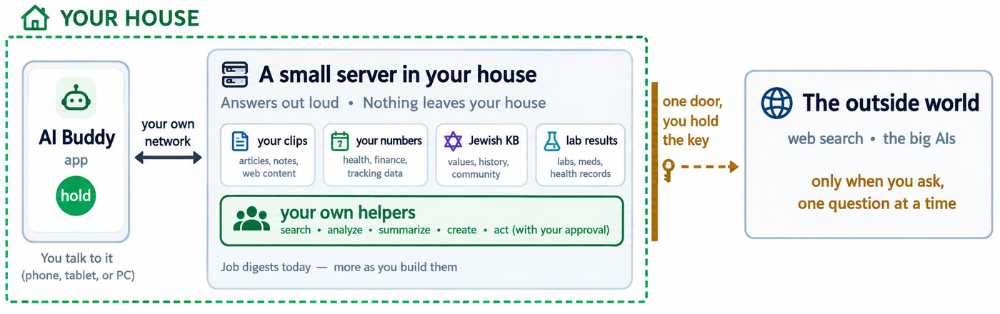

Retired scientist type and existentialist. Life focal point is my personal AI infrastructure for cognitive expansion, digital sovereignty and hardening my defensive position in a rapidly changing world. The pace of life is increasing while I slow down, but I live my life knowing that the past is gone and the future is yet to come, that here and now is nothing less than the totality of existence.
A new force has entered the world, AI. In order for me to exert my will to shape the world as I wish, and maximize my quality of life, I must adapt.
My local AI capabilities are not separate from me, they are personal augmentation. So I want them to be available everywhere, all the time. But bolting silicon onto flesh is a work in progress. AR glasses, Neuralink, Bee wristband, Omi pendant, these all fall short in one way or another.

AI Buddy acts as the query surface for all my AI services running on the tower. When I ask a question or open a service a script runs on the tower managed by a local LLM (small AI model). It is smart enough to call up the right information from my assortment of knowledgebases, and format the query results to fit the question (e.g. a graph of medical test results vs. a structured essay for an AI Rabbi response).
It’s organic. As I perceive new needs, or want to improve existing services, I work with frontier AI (for me, Claude Code) to write and code what I need. But after creation, the work product resides on my AI PC Tower.
I am actively exploring this human-augmentation, carry my local AI around everywhere space. The gadget taught me the form factor; the phone is the practical manifestation. Still opening more doors from my devices onto what's on the tower. Maybe connect to my smart watch, maybe other ways of communication (bone conduction microphone), more smart house functions, we’ll see.
Inside AI Buddy — every service, screen by screen →In a hurry? Two major service projects of AI Buddy:
AI Rabbi — RabbAI Responsa → AI Medical — my own medical records →